DC 모터 속도 제어 — 모델링부터 Simscape 검증까지
- 직류전동기의 전기 식과 기계 식은 어떤 두 식으로 이어지나? 축에 원판이 달리면 식의 어디가 바뀌나?
- 인덕턴스를 빼고 1차 시스템으로 줄여도 되는 근거는 무엇인가?
- PI 제어기의 두 이득은 어떤 계산으로 정하나? 그때 모터에 걸리는 전압은 전원 한계 안에 드나?
- 저항 · 인덕터 · 관성 · 댐퍼 블록을 이은 Simscape 모델은 손으로 세운 식과 같은 답을 내나?
- 원판을 더 무거운 것으로 바꾸면 같은 제어기가 여전히 잘 동작하나? 아니라면 왜인가?
9회에서는 Simulink로 블록 선도를 그리고 제어기를 끼웠고, 10회에서는 Simscape로 부품을 이어 물리 모델을 만들었다. 오늘은 둘을 합친다. 실제로 흔히 쓰는 장치 — 원판을 돌리는 DC 모터 — 를 골라 제어공학 4장의 방법으로 식을 세우고, 그 식으로 속도 제어기를 설계하고, Simscape로 조립한 모터에 붙여 검증한다. 마지막에는 원판을 모양과 질량이 있는 3차원 물체로 바꿔 실제로 도는 모습을 본다.
한 장 요약
위에서 아래로 읽으면 오늘의 순서가 된다 — 식 → 설계 → 조립 → 검증.
| 단계 | 쓰는 것 | 결과 |
|---|---|---|
| ① 상황 정하기 | 12 V 모터 · 1 kg 원판 · 목표 400 rpm · 1초에 브레이크 | 무엇을 재고 무엇을 맞출지 |
| ② 모델링 | KVL · 토크 평형 · \(v_b = K\omega\) · \(T_m = K i_a\) | \(\Omega/E_a = \dfrac{K}{(L_a s + R_a)(Js + D) + K^2}\) → 1차 \(\dfrac{b}{s+a}\) |
| ③ 부하의 효과 | step으로 원판 있음/없음 비교 | 관성은 느리게, 마찰은 낮게 |
| ④ 제어기 설계 | PI 영점으로 모터 극점 지우기 · minreal | \(K_p = 0.254\), \(K_i = 1.20\), 폐루프 시정수 0.1 s |
| ⑤ Simscape 조립 | Controlled Voltage Source · Resistor · Inductor · Rotational Electromechanical Converter · Inertia · Rotational Damper · Ideal Torque Source · Ideal Rotational Motion Sensor | 식을 적지 않은 모터 모델 |
| ⑥ 제어 루프 | Step · Sum · PID Controller(PI) · Saturation(±12 V) · Subsystem · Scope | 400 rpm 추종, 브레이크를 이겨 냄 |
| ⑦ 검증 | lsim으로 식의 응답 · Simscape와 겹치기 | 두 곡선이 겹친다 — 모델링이 맞다 |
| ⑧ 3D로 보기 | Simscape Multibody — World Frame · Rigid Transform · Revolute Joint · Cylindrical Solid · Inertia · Rotational Multibody Interface · Multibody Explorer | 원판이 3D로 돈다, 관성 \(\tfrac12 mr^2\)을 모양에서 구한다 |
| ⑨ 한계 | 원판 질량을 바꿔 가며 sim | 무거우면 전압 포화 → 와인드업 |
① 무엇을 만드나 — 원판이 달린 DC 모터
모터의 회전속도를 원하는 값에 맞추는 일은 어디에 쓰일까? 컨베이어 벨트, 드론 프로펠러, 로봇 바퀴, 3D 프린터의 이송축 — 모터가 있는 곳이면 거의 다다. 그런데 모터는 맨몸으로 돌지 않는다. 축에는 늘 무언가가 달려 있고, 그 물건의 무게와 마찰이 모터의 움직임을 바꾼다. 오늘은 축에 쇠 원판 하나를 단 모터를 다룬다.
| 무엇 | 값 | 코드의 변수 |
|---|---|---|
| 전기자 저항 · 인덕턴스 | 2 Ω · 2 mH | Ra · La |
| 토크 상수 = 역기전력 상수 | 0.1 N·m/A = 0.1 V/(rad/s) | Km |
| 모터 자체의 관성 · 마찰 | 2×10⁻⁵ kg·m² · 1×10⁻⁵ N·m/(rad/s) | Jm · Dm |
| 원판 | 질량 1 kg, 반지름 5 cm, 마찰 1×10⁻³ N·m/(rad/s) | m_disc · r_disc · DL |
| 전원 한계 | ±12 V | V_max |
| 목표 | 0.1초부터 400 rpm. 0.5초 안에 거의 도달 | rpm_ref |
| 외란 | 1초에 브레이크 0.05 N·m. 그래도 400 rpm으로 되돌아올 것 | t_brake · T_brake |
이런 일을 Simscape로 하는 것이 맞을까? 식이 단순하다면 Transfer Fcn 블록 하나로도 시뮬레이션은 된다. 그래도 Simscape로 한 번 더 조립해 보는 데는 두 가지 이유가 있다. 첫째, 손으로 세운 식이 맞는지 독립된 방법으로 확인할 수 있다. 둘째, 원판을 바꾸거나 브레이크를 다는 일이 블록 하나를 바꾸거나 더하는 일이 된다. 식으로 하려면 전달함수를 다시 유도해야 한다.
② 직류전동기의 모델링
전압을 넣으면 속도가 어떻게 나오는지를 식으로 쓰려면 무엇이 필요할까? 제어공학 4장의 전기자제어 직류전동기 그대로, 전기 쪽 식 하나, 기계 쪽 식 하나, 둘을 잇는 식 둘이다.
전기 쪽 — 전기자 회로에 KVL을 쓴다. 전원 전압이 저항 · 인덕터 · 역기전력에 나뉘어 걸린다.
$$e_a = R_a i_a + L_a \frac{di_a}{dt} + v_b$$기계 쪽 — 축에 걸리는 토크의 평형. 모터 토크가 관성을 가속하고, 마찰을 이기고, 부하(브레이크)를 버틴다.
$$T_m = J\frac{d\omega}{dt} + D\omega + T_L$$둘을 잇는 식 — 역기전력은 회전속도에, 모터 토크는 전류에 비례한다.
$$v_b = K_b\,\omega, \qquad T_m = K_i\, i_a$$
SI 단위에서는 \(K_b\)(V/(rad/s))와 \(K_i\)(N·m/A)가 같은 값이다. 모터가 전기 에너지를 기계 에너지로 바꿀 때 \(v_b i_a = T_m \omega\)여야 하기 때문이다.
그래서 하나로 묶어 \(K\)(코드에서는 Km)로 쓴다.
📐 이론과 잇기 — 원판이 달리면 \(J\)와 \(D\)가 바뀐다
4장의 모터 식에는 모터 자체의 관성 \(J_m\)과 마찰 \(D_m\)만 있었다. 원판이 축에 단단히 붙어 있으면 둘은 같은 각속도로 함께 돈다. 그러면 토크 평형식에서 관성끼리, 마찰끼리 더해진다.
$$J = J_m + J_L, \qquad D = D_m + D_L$$원판(균일한 원기둥)의 관성은 \(J_L = \tfrac{1}{2} m r^2 = \tfrac{1}{2}(1)(0.05)^2 = 1.25\times10^{-3}\) kg·m²로, 모터 자체의 \(J_m = 2\times10^{-5}\)보다 60배 넘게 크다. 모터의 움직임은 거의 원판이 정한다.
% DC 모터와 원판 부하의 값 — Simscape 모델의 블록들도 이 변수를 읽는다
Ra = 2; % 전기자 저항 [Ohm]
La = 2e-3; % 전기자 인덕턴스 [H]
Km = 0.1; % 토크 상수 = 역기전력 상수 [N*m/A] = [V/(rad/s)]
Jm = 2e-5; % 회전자 관성 [kg*m^2]
Dm = 1e-5; % 모터 마찰 [N*m/(rad/s)]
m_disc = 1.0; % 원판 질량 [kg]
r_disc = 0.05; % 원판 반지름 [m]
JL = 0.5*m_disc*r_disc^2 % 원판의 관성 [kg*m^2]
DL = 1e-3; % 원판이 받는 마찰(공기·베어링) [N*m/(rad/s)]
J = Jm + JL % 같은 축에 붙어 있으면 관성은 더해진다
D = Dm + DL % 마찰도 더해진다명령 창 출력
JL =
0.0013
J =
0.0013
D =
0.0010이제 전달함수를 구한다. 네 식을 라플라스 변환하고(초기값 0, \(T_L = 0\)) \(i_a\)를 없앤다. 전기 식에서 \(I_a = \dfrac{E_a - K\Omega}{L_a s + R_a}\), 기계 식에서 \((Js + D)\Omega = K I_a\)이므로
$$(Js + D)\,\Omega = K\,\frac{E_a - K\Omega}{L_a s + R_a}$$ $$\frac{\Omega(s)}{E_a(s)} = \frac{K}{(L_a s + R_a)(Js + D) + K^2}$$인덕턴스를 뺀 1차 모델
분모가 2차라 극점이 둘이다. 둘 다 필요할까? 숫자를 넣어 극점부터 본다.
% 인덕턴스까지 넣은 전달함수와, 인덕턴스를 뺀 1차 전달함수
s = tf('s');
G_full = Km/((La*s + Ra)*(J*s + D) + Km^2)
pole(G_full)
a = (D*Ra + Km^2)/(J*Ra);
b = Km/(J*Ra);
G = b/(s + a)
fprintf('시정수 1/a = %.3f s, 직류 이득 b/a = %.2f (rad/s)/V\n', 1/a, b/a)
fprintf('12 V 를 계속 걸면 %.1f rad/s = %.0f rpm\n', 12*b/a, 12*b/a*60/(2*pi))명령 창 출력
G_full =
0.1
-----------------------------------
2.54e-06 s^2 + 0.002542 s + 0.01202
Continuous-time transfer function.
Model Properties
ans =
-996.0442
-4.7511
G =
39.37
---------
s + 4.732
Continuous-time transfer function.
Model Properties
시정수 1/a = 0.211 s, 직류 이득 b/a = 8.32 (rad/s)/V
12 V 를 계속 걸면 99.8 rad/s = 953 rpm극점이 \(-996\)과 \(-4.75\)다. 200배 넘게 떨어져 있다. \(-996\)은 전기 회로의 극점(대략 \(R_a/L_a = 1000\))이라 1/1000초 단위로 끝나 버리고, 응답의 모양은 거의 \(-4.75\)인 기계 극점이 정한다. 그래서 \(L_a \approx 0\)으로 두고 줄인다.
$$\frac{\Omega(s)}{E_a(s)} \approx \frac{K}{R_a(Js + D) + K^2} = \frac{\dfrac{K}{JR_a}}{s + \dfrac{DR_a + K^2}{JR_a}} = \frac{b}{s + a}$$ $$a = \frac{(1.01\times10^{-3})(2) + 0.1^2}{(1.27\times10^{-3})(2)} = 4.73, \qquad b = \frac{0.1}{(1.27\times10^{-3})(2)} = 39.37$$1차 지연 요소다. 시정수 \(1/a = 0.211\)초, 1 V당 최종 속도 \(b/a = 8.32\) rad/s. 12 V를 끝까지 걸면 953 rpm까지 간다 — 400 rpm은 넉넉히 낼 수 있다. 두 식의 계단응답을 겹쳐서 줄인 것이 괜찮은지 눈으로 확인한다.
% 12 V 를 걸었을 때 — 두 식의 응답을 rpm 으로 겹쳐 본다
to_rpm = 60/(2*pi);
[w1, t1] = step(12*G_full, 1.2);
[w2, t2] = step(12*G, 1.2);
plot(t1, w1*to_rpm, 'LineWidth', 2.5); hold on
plot(t2, w2*to_rpm, 'k--', 'LineWidth', 1.2); hold off
grid on; xlabel('시간 (s)'); ylabel('회전속도 (rpm)')
legend('인덕턴스 포함 (2차)', '인덕턴스 뺌 (1차)', 'Location', 'southeast')
title('12 V 를 걸었을 때 — 원판이 달린 모터')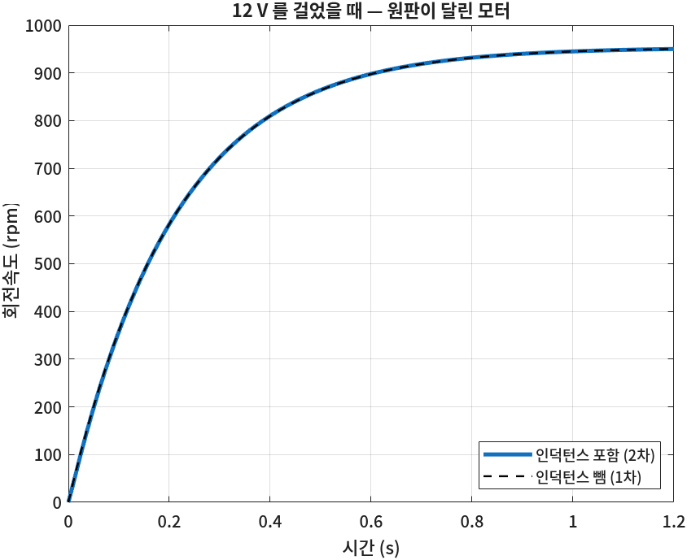
③ 부하의 효과 — 관성과 마찰
원판을 달면 모터는 얼마나 달라질까? 같은 6 V를 모터만 있을 때와 원판을 달았을 때 걸어 본다.
% 원판이 없을 때와 있을 때 — 같은 6 V 를 건다
G_noload = Km/((La*s + Ra)*(Jm*s + Dm) + Km^2); % 모터만
t = linspace(0, 1.2, 600);
w_noload = step(6*G_noload, t)*to_rpm;
w_disc = step(6*G_full, t)*to_rpm;
plot(t, w_noload, t, w_disc, 'LineWidth', 2); grid on
xlabel('시간 (s)'); ylabel('회전속도 (rpm)')
legend('모터만', '원판 1 kg 을 단 모터', 'Location', 'southeast')
title('부하가 있으면 — 6 V 를 걸었을 때')
fprintf('최종 속도 모터만 %.0f rpm, 원판 %.0f rpm\n', w_noload(end), w_disc(end))
fprintf('시정수 모터만 %.4f s, 원판 %.3f s\n', Jm*Ra/(Dm*Ra + Km^2), J*Ra/(D*Ra + Km^2))명령 창 출력
최종 속도 모터만 572 rpm, 원판 475 rpm
시정수 모터만 0.0040 s, 원판 0.211 s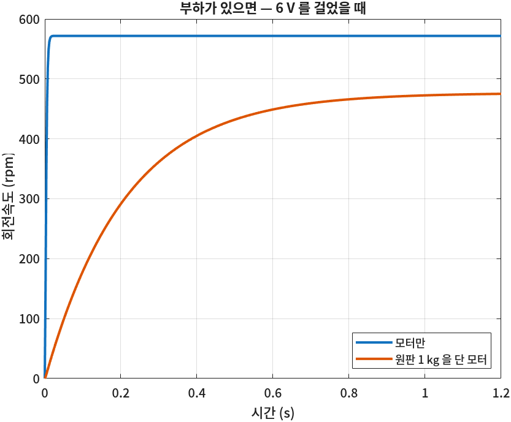
📐 이론과 잇기 — 관성은 「언제」, 마찰은 「어디까지」
시정수 \(\tau = \dfrac{JR_a}{DR_a + K^2}\) — 분자에 \(J\)가 있다. 관성이 60배 커지니 시정수도 0.004초 → 0.211초로 50배 넘게 길어졌다.
최종 속도 \(\omega(\infty) = \dfrac{K}{DR_a + K^2}\,e_a\) — \(J\)가 없다. 무거운 원판도 결국 같은 속도까지 간다. 속도를 낮춘 것은 원판의 마찰 \(D_L\)이다. 분모 \(DR_a + K^2\)에서 \(K^2 = 0.01\)이 \(DR_a = 0.002\)보다 커서, 마찰이 100배 커져도 최종 속도는 572 → 475 rpm으로 17%만 줄었다.
④ PI 속도 제어기 설계
목표 400 rpm에 맞추려면 전압을 얼마 걸면 될까? 원판의 마찰을 정확히 알면 \(400 \text{ rpm} \div 8.32\)만큼 걸면 된다. 하지만 마찰은 정확히 알기 어렵고 브레이크처럼 운전 중에 바뀐다. 그래서 속도를 재서 되먹이는 피드백 제어를 쓴다. 9회에서 본 것처럼 P 제어만으로는 오차가 남으니 처음부터 PI로 간다.
PI 제어기를 영점이 보이는 꼴로 쓴다.
$$C(s) = K_p + \frac{K_i}{s} = K_p\,\frac{s + K_i/K_p}{s}$$영점 \(-K_i/K_p\)를 모터의 극점 \(-a\) 위에 두면 둘이 지워진다(극점-영점 상쇄). 그러면 개루프가 적분기 하나만 남고, 폐루프는 1차가 된다.
$$\frac{K_i}{K_p} = a \quad\Rightarrow\quad C(s)G(s) = K_p\frac{s+a}{s}\cdot\frac{b}{s+a} = \frac{bK_p}{s}$$ $$T(s) = \frac{bK_p/s}{1 + bK_p/s} = \frac{bK_p}{s + bK_p} = \frac{1}{\tau_c s + 1}, \qquad \tau_c = \frac{1}{bK_p}$$폐루프 시정수 \(\tau_c\)를 원하는 값으로 고르면 \(K_p\)가 정해지고, \(K_i = aK_p\)다. 모터만의 시정수 0.211초보다 두 배 빠르게, \(\tau_c = 0.1\)초로 정한다(0.5초 = 5τ면 99%).
$$K_p = \frac{1}{b\,\tau_c} = \frac{1}{39.37 \times 0.1} = 0.254, \qquad K_i = aK_p = 4.73 \times 0.254 = 1.20$$% PI 제어기 C(s) = Kp + Ki/s = Kp (s + Ki/Kp)/s 의 영점으로 모터의 극점 -a 를 지운다
tau_c = 0.1; % 원하는 폐루프 시정수 [s]
Kp = 1/(b*tau_c)
Ki = a*Kp
C = Kp + Ki/s;
T = minreal(feedback(C*G, 1)) % 폐루프 전달함수 — 1차가 된다명령 창 출력
Kp =
0.2540
Ki =
1.2020
T =
10
------
s + 10
Continuous-time transfer function.
Model Properties
minreal이 분자와 분모의 같은 인수 \((s + 4.73)\)를 지워 \(T = 10/(s+10)\) — 시정수 0.1초인 1차 시스템이 남았다.
이제 P만 쓸 때와 비교하고, 모터에 걸리는 전압도 함께 본다. 전압이 12 V를 넘으면 이 설계는 실제로 낼 수 없는 값을 요구하는 셈이다.
% 목표 400 rpm — P 제어(같은 Kp)와 PI 제어의 응답과 모터 전압
rpm_ref = 400;
w_ref = rpm_ref*2*pi/60; % [rad/s]
t = linspace(0, 0.8, 800);
T_p = feedback(Kp*G, 1);
U_p = feedback(Kp, G); % 목표 → 전압 u 의 전달함수
U_pi = feedback(C, G);
subplot(2,1,1)
plot(t, step(w_ref*T_p, t)*to_rpm, t, step(w_ref*T, t)*to_rpm, 'LineWidth', 2)
yline(rpm_ref, 'k--'); grid on; ylabel('회전속도 (rpm)')
legend('P (Kp 만)', 'PI', 'Location', 'southeast'); title('목표 400 rpm')
subplot(2,1,2)
plot(t, step(w_ref*U_p, t), t, step(w_ref*U_pi, t), 'LineWidth', 2)
yline(12, 'r:', '12 V'); grid on; ylabel('모터 전압 (V)'); xlabel('시간 (s)'); ylim([0 13])
fprintf('P : 최종 %.0f rpm\n', dcgain(T_p)*rpm_ref)
fprintf('PI : 최종 %.0f rpm, 처음 전압 %.2f V, 최종 전압 %.2f V\n', dcgain(T)*rpm_ref, Kp*w_ref, dcgain(U_pi)*w_ref)명령 창 출력
P : 최종 272 rpm
PI : 최종 400 rpm, 처음 전압 10.64 V, 최종 전압 5.03 V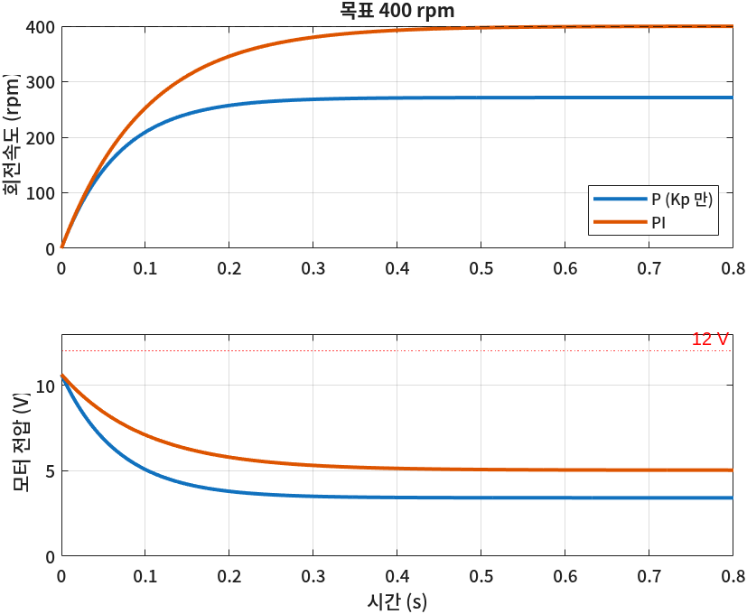
📐 이론과 잇기 — 첫 순간의 전압과 마지막 전압
첫 순간: 목표가 뛰는 순간 속도는 아직 0이라 오차가 목표 그대로다. 적분 항은 아직 0이니 \(u(0^+) = K_p\,\omega_{ref} = 0.254 \times 41.9 = 10.6\) V. \(\tau_c\)를 더 작게(더 빠르게) 잡으면 \(K_p\)가 커져 12 V를 넘는다 — 빠르기의 한계를 전원 전압이 정한다.
마지막: 400 rpm으로 돌 때 모터가 버텨야 하는 것은 마찰과 역기전력이다. ②의 식에서 \(\dot\omega = 0\)이면 \(e_a = \dfrac{DR_a + K^2}{K}\,\omega = \dfrac{0.01202}{0.1}\times 41.9 = 5.04\) V. PI의 적분 항이 이 5 V를 만들어 낸다. P만 쓰면 이 전압을 만들 방법이 오차밖에 없어서 오차가 남는다.
⑤ Simscape로 모터와 원판 조립하기
설계는 1차 근사 모델로 했다. 인덕턴스와 전원 한계, 브레이크까지 있는 「실제에 가까운」 모터에서도 이 제어기가 통할까? 10회처럼 부품을 이어 모터를 만든다. 쓰는 블록은 모두 Foundation Library 안에 있다.
| 블록 (Library Browser 위치) | ②의 식에서 |
|---|---|
| Controlled Voltage Source (Electrical › Electrical Sources) | 입력 신호만큼의 전압 \(e_a\) |
| Resistor · Inductor (Electrical › Electrical Elements) | \(R_a i_a\) · \(L_a\,di_a/dt\) |
| Rotational Electromechanical Converter (Electrical › Electrical Elements) | \(v_b = K\omega\)와 \(T_m = K i_a\) — 전기와 기계를 잇는 두 식 |
| Electrical Reference (Electrical › Electrical Elements) | 전기 회로의 접지(0 V) |
| Inertia × 2 · Rotational Damper × 2 (Mechanical › Rotational Elements) | \(J_m\dot\omega\), \(J_L\dot\omega\), \(D_m\omega\), \(D_L\omega\) |
| Ideal Torque Source (Mechanical › Mechanical Sources) | 브레이크 \(T_L\) |
| Ideal Rotational Motion Sensor (Mechanical › Mechanical Sensors) | \(\omega\)와 각도 \(\theta\)를 잰다 |
| Mechanical Rotational Reference (Mechanical › Rotational Elements) | 움직이지 않는 바닥(모터 몸체) |
| Solver Configuration · Simulink-PS · PS-Simulink Converter (Utilities) | 10회의 뼈대 |

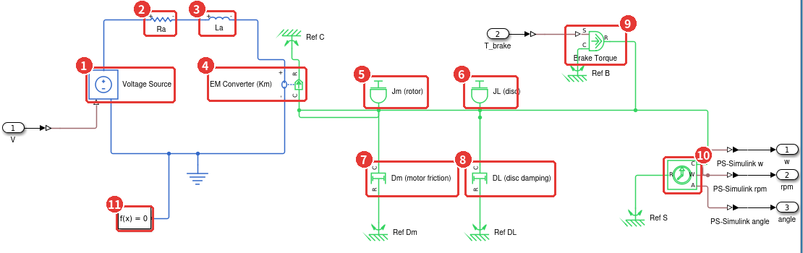
- 1Voltage Source(Controlled Voltage Source) — \(e_a\). 아래 삼각형 단자로 들어온 물리 신호(V)만큼 전압을 낸다.
- 2Ra — 저항
RaΩ. KVL의 \(R_a i_a\). - 3La — 인덕턴스
LaH. KVL의 \(L_a\,di_a/dt\). - 4EM Converter(Rotational Electromechanical Converter) — 왼쪽 +·− 단자에 걸리는 전압이 \(v_b = K\omega\), 흐르는 전류가 오른쪽 C·R 사이에 \(T_m = K i_a\)를 만든다. R은 모터 몸체(바닥, Ref C)에, C는 축에 붙인다.
- 5Jm (rotor) — 모터 회전자의 관성
Jm. - 6JL (disc) — 원판의 관성
JL. 같은 축 선에 붙어 있으니 \(J = J_m + J_L\)이 저절로 된다. - 7Dm (motor friction) — 모터 베어링의 마찰. C를 축에, R을 바닥에.
- 8DL (disc damping) — 원판이 받는 공기 · 베어링 마찰.
- 9Brake Torque(Ideal Torque Source) — 브레이크. R을 축에, C를 바닥에 달아서 양(+)의 입력이 회전을 늦추게 했다. 10회 ⚠️의 R · C 규칙을 일부러 거꾸로 쓴 자리다.
- 10Motion Sensor — W(각속도)를 rad/s와 rpm 두 변환기로, A(각도)를 rad로 내보낸다.
- 11Solver Configuration — 전기와 기계가 변환기로 이어져 하나의 네트워크이므로 하나만 붙인다.
선을 그을 때 축(초록 가로선)은 이렇게 생각하면 된다. 변환기의 C에서 시작한 선 하나에 관성 · 댐퍼 · 브레이크 · 센서를 모두 매단다. 10회의 「위쪽 초록 선 = 질량에 붙은 점」과 같은 뜻으로, 이 선 위의 모든 단자가 같은 각속도 \(\omega\)로 돈다. 바닥은 블록마다 Mechanical Rotational Reference를 하나씩 따로 달아도 된다. 모두 같은 「움직이지 않는 바닥」이다.
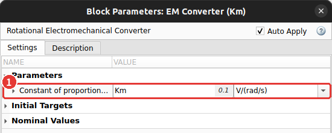
Km, 단위 V/(rad/s). 이 값 하나가 \(K_b\)와 \(K_i\)를 함께 정한다.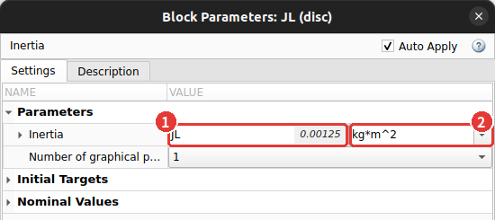
JL(작업공간의 0.00125가 흐리게 보인다) 2 단위 kg·m². 원판을 바꾸려면 작업공간의 JL만 바꾸면 된다.서브시스템으로 묶기
이 모델을 제어 루프에 그대로 펼쳐 놓으면 화면이 너무 복잡하다. 모터 부분을 블록 하나로 접는다.
- Simulink-PS Converter(전압용) 앞에 Inport 블록, 브레이크용 Simulink-PS Converter 앞에 Inport를 하나 더 놓는다. 이름을
V·T_brake로 바꾼다. - PS-Simulink Converter 세 개 뒤에 Outport 블록을 하나씩 놓고
w·rpm·angle로 이름 짓는다. - 마우스로 전체를 끌어 모두 고른 뒤 Ctrl+G(또는 오른쪽 클릭 → Create Subsystem from Selection). 블록 하나가 되면 이름을
DC Motor + Disc로 바꾼다. - 서브시스템을 더블클릭하면 안으로 들어가고, 편집기 위쪽 경로 막대(
motor_speed › DC Motor + Disc)에서 바깥을 누르면 나온다.
⑥ 속도 제어 루프와 실행
바깥에는 9회와 같은 피드백 루프를 그린다. 다른 점은 둘이다 — 플랜트 자리에 방금 만든 모터 서브시스템이 들어가고, 제어기 뒤에 ±12 V 한계가 붙는다.

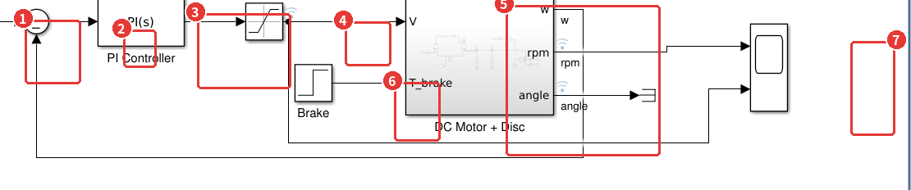
motor_speed.slx의 바깥 모델.- 1Speed Ref(Step) — 목표 각속도. 0.1초에 0 →
rpm_ref*2*pi/60. - 2Sum
|+-— 오차 \(\omega_{ref} - \omega\). 되먹임은 rad/s 단위의w출력에서 온다. 설계를 rad/s로 했기 때문이다. - 3PI Controller(PID Controller 블록에서 Controller = PI) —
Kp·Ki. - 4Saturation(Discontinuities 라이브러리) — 들어온 신호를 위아래 한계 안으로 잘라 내보낸다. 여기서는 ±
V_max, 드라이버가 낼 수 있는 전압의 한계다. - 5DC Motor + Disc — ⑤의 서브시스템. 블록 겉면에 안쪽 모델이 작게 비친다.
- 6Brake(Step) —
t_brake초에 0 →T_brakeN·m. - 7Scope — 입력 두 개(rpm, 전압 u). Scope 설정의 Layout을 2×1로 해서 위아래 두 칸에 그린다.
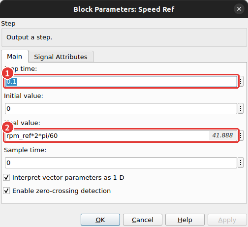
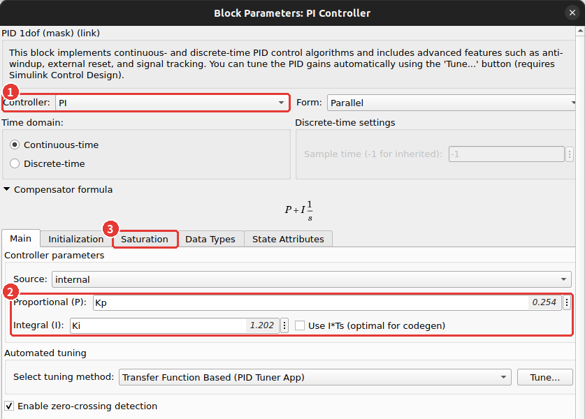
Kp · Ki 3 Saturation 탭 — ⑨와 조금 더 알아두면에서 다시 본다.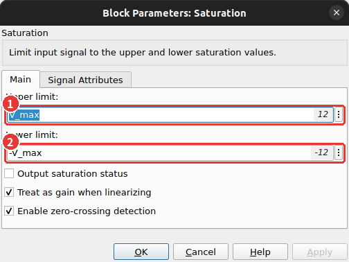
V_max 2 아래 한계 -V_max. 모터를 반대로도 돌릴 수 있으니 −12 V까지 허용한다.
블록들이 읽는 변수 중 아직 정하지 않은 셋(V_max · t_brake · T_brake)을 정하고 Run을 누른다. Stop Time은 2초, Max step size는 1 ms로 두었다.

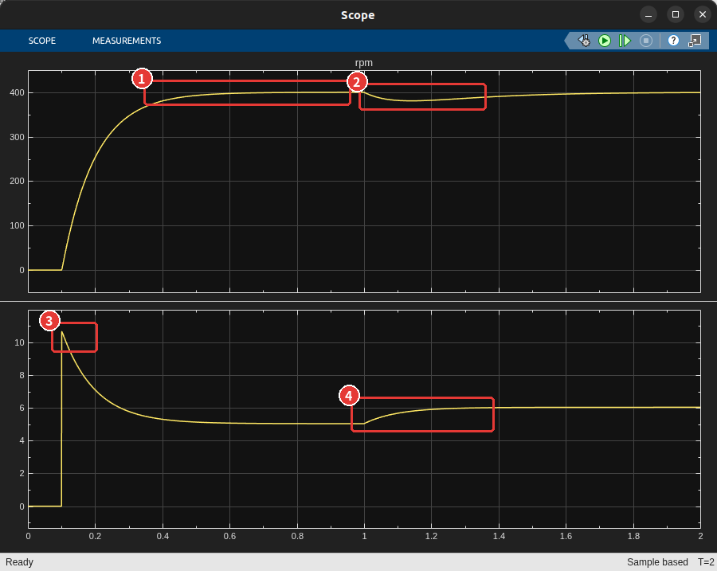
- 10.5초쯤 400 rpm에 닿아 머문다 — ④에서 설계한 시정수 0.1초 그대로다.
- 21초에 브레이크가 걸리자 381 rpm까지 떨어졌다가 다시 400으로 돌아온다.
- 3목표가 뛰는 순간 전압이 10.6 V — 12 V 한계에 닿지 않았다.
- 4브레이크를 버티느라 전압이 5 V → 6 V로 올라간다.
% Simscape 모델이 읽는 나머지 변수를 정하고 돌린다
V_max = 12; % 전원 전압 한계 [V]
t_brake = 1.0; % 브레이크를 거는 시각 [s]
T_brake = 0.05; % 브레이크 토크 [N*m]
out = sim('motor_speed');
rpm = out.logsout.getElement('rpm').Values;
u = out.logsout.getElement('u').Values;
at = @(x, tq) interp1(x.Time, x.Data, tq);
fprintf('t = 0.6 s %.1f rpm\n', at(rpm, 0.6))
fprintf('브레이크 뒤 가장 느릴 때 %.1f rpm (t = %.2f s)\n', min(rpm.Data(rpm.Time > 1)), ...
rpm.Time(find(rpm.Data == min(rpm.Data(rpm.Time > 1)), 1)))
fprintf('t = 2.0 s %.1f rpm\n', rpm.Data(end))
fprintf('전압 최대 %.2f V, t = 0.9 s %.2f V, t = 2.0 s %.2f V\n', max(u.Data), at(u, 0.9), u.Data(end))명령 창 출력
t = 0.6 s 397.3 rpm
브레이크 뒤 가장 느릴 때 380.7 rpm (t = 1.14 s)
t = 2.0 s 399.4 rpm
전압 최대 10.65 V, t = 0.9 s 5.04 V, t = 2.0 s 6.03 V🆕 이 코드에서 처음 나오는 것
- interp1(x, y, xq)
- 표 (x, y) 사이를 직선으로 이어 xq에서의 값을 읽는다(선형 보간). Simulink는 시간 간격을 스스로 바꿔 가며 계산하므로 정확히 0.6초인 칸이 없을 수 있다. 여기서는
at(rpm, 0.6)처럼 원하는 시각의 값을 읽으려고at으로 묶어 썼다.
📐 이론과 잇기 — 브레이크를 버티는 데 드는 1 V
브레이크 토크 \(T_L = 0.05\) N·m를 모터가 버티려면 전류가 \(T_L/K = 0.05/0.1 = 0.5\) A 더 흘러야 하고, 그만큼 저항에서 \(R_a \times 0.5 = 1\) V가 더 든다.
$$e_a = 5.04 + \frac{R_a}{K}T_L = 5.04 + \frac{2}{0.1}(0.05) = 6.04 \text{ V}$$출력의 6.03 V와 같다. PI의 적분 항이 이 1 V를 찾아낸 것이다. 떨어진 깊이(19 rpm)와 돌아오는 속도는 모터 극점 \(-a\)의 시정수 0.21초를 따른다 — PI 영점이 지운 그 극점이 외란 응답에는 그대로 남는다(조금 더 알아두면).
⑦ Simscape 모델과 식의 비교
Simscape 모델에는 인덕턴스와 전원 한계가 있고, 설계에 쓴 식에는 없다. 두 결과는 얼마나 다를까?
②의 1차 모델에 같은 목표와 브레이크를 넣어 lsim으로 풀고 겹친다.
브레이크에서 속도까지의 전달함수는 기계 식에서 \(\Omega = \dfrac{1/J}{s + a}(\cdots - T_L)\)이므로, 피드백을 닫으면 \(-\dfrac{G_d}{1 + CG}\)다(\(G_d = \dfrac{1/J}{s+a}\)).
% 식으로 만든 폐루프에 같은 목표와 브레이크를 넣어 Simscape 와 겹친다
Gd = (1/J)/(s + a); % 브레이크 토크 → 회전속도 (부호는 아래에서 -)
T_brk = minreal(-Gd/(1 + C*G)); % 브레이크 → 회전속도 (폐루프)
tt = (0:1e-3:2)'; % lsim 은 간격이 고른 시간축을 쓴다
rpm_ssc = interp1(rpm.Time, rpm.Data, tt); % Simscape 결과를 같은 시간축으로
r_in = w_ref*(tt >= 0.1); % Speed Ref: 0.1 s 에 계단
d_in = T_brake*(tt >= t_brake);
w_lin = lsim(T, r_in, tt) + lsim(T_brk, d_in, tt);
plot(tt, rpm_ssc, 'LineWidth', 2.5); hold on
plot(tt, w_lin*to_rpm, 'k--', 'LineWidth', 1.2); hold off
grid on; xlabel('시간 (s)'); ylabel('회전속도 (rpm)'); ylim([0 450])
legend('Simscape 모델', '식 (1차 근사 + PI)', 'Location', 'southeast')
title('Simscape 와 식의 비교')
fprintf('두 곡선의 가장 큰 차이 %.2f rpm\n', max(abs(rpm_ssc - w_lin*to_rpm)))명령 창 출력
두 곡선의 가장 큰 차이 3.69 rpm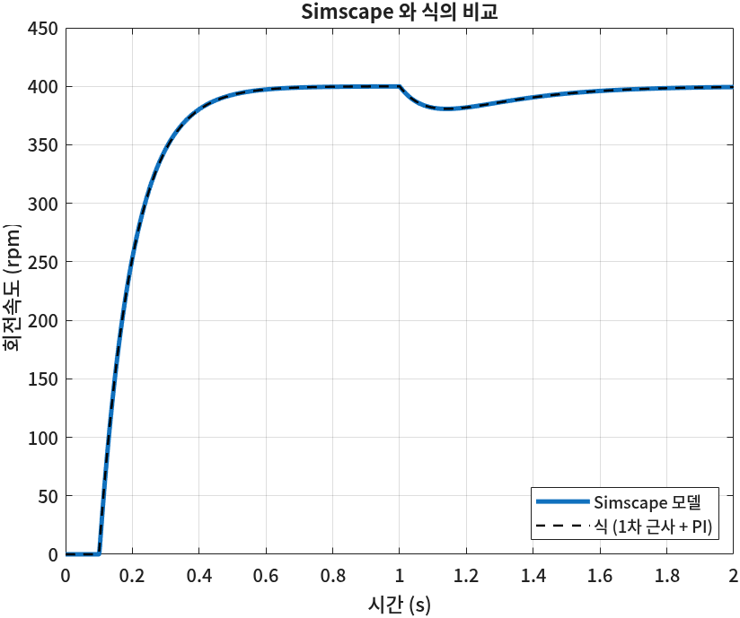
모델링이 맞았다는 뜻이다. 서로 다른 두 방법 — 식을 세워 푼 것과 부품을 이어 Simscape가 푼 것 — 이 같은 답을 냈다. 남은 3.7 rpm은 1차 모델에서 뺀 인덕턴스의 몫이다. ②에서 극점이 200배 떨어져 있으니 빼도 된다고 한 판단을 이 그림이 확인해 준다.
⑧ 원판을 3차원 물체로 — Simscape Multibody
rpm 그래프만으로는 원판이 실제로 어떻게 도는지 잘 그려지지 않는다. 그런데 지금 모델에 원판의 모양은 어디에도 없다.
JL (disc) 블록에 들어 있는 것은 「관성 0.00125 kg·m²」라는 숫자 하나뿐이니, 화면에 그릴 거리도 없다.
Simscape Multibody는 물체를 모양과 질량으로 적고 관절로 이어 3차원 기계를 만드는 Simscape의 한 부분이다(1회 제품 표). 실행하면 Multibody Explorer 창이 열리고 그 물체가 3D로 움직인다. 모터 모델을 처음부터 다시 만들 필요는 없다. 전기 회로 · 댐퍼 · 브레이크 · 센서 · 바깥 루프는 그대로 두고, 축에 달린 관성 두 개(Jm · JL)만 Multibody 블록으로 바꾼다.
motor_speed를 연 채로 SIMULATION 탭의 Save › Save As로motor_speed_3d.slx라는 이름으로 저장한다. ⑥~⑦의 모델은 그대로 남는다.DC Motor + Disc서브시스템에 들어가Jm (rotor)와JL (disc)블록을 지운다(블록을 고르고 Delete). 끊긴 선 조각도 지운다.- 아래 표의 블록을 놓고 그림처럼 잇는다.
| 블록 (Library Browser 위치) | 하는 일 |
|---|---|
| World Frame (Simscape › Multibody › Frames and Transforms) | 움직이지 않는 바닥의 좌표계. Multibody 모델은 모두 여기서 출발한다 |
| Rigid Transform × 2 (Frames and Transforms) | 좌표계를 정해진 만큼 옮긴다 — 바닥에서 축 끝까지, 원판 중심에서 가장자리까지 |
| Revolute Joint (Joints) | 한 축(z) 둘레로 도는 것만 허락하는 관절 — 모터의 베어링 |
| Cylindrical Solid × 2 (Body Elements) | 원통 모양의 물체. 반지름 · 두께 · 질량을 주면 관성을 스스로 계산한다 — 원판, 모터 몸체 |
| Inertia (Body Elements) | 모양 없이 질량과 관성만 있는 물체 — 회전자 \(J_m\) |
| Graphic (Body Elements) | 질량 없이 화면에 그림만 그린다 — 원판 위의 빨간 점 |
| Rotational Multibody Interface (Simscape › Foundation Library › Mechanical › Multibody Interfaces) | 지금까지 쓴 축(초록 선)과 Multibody 관절을 잇는다 |

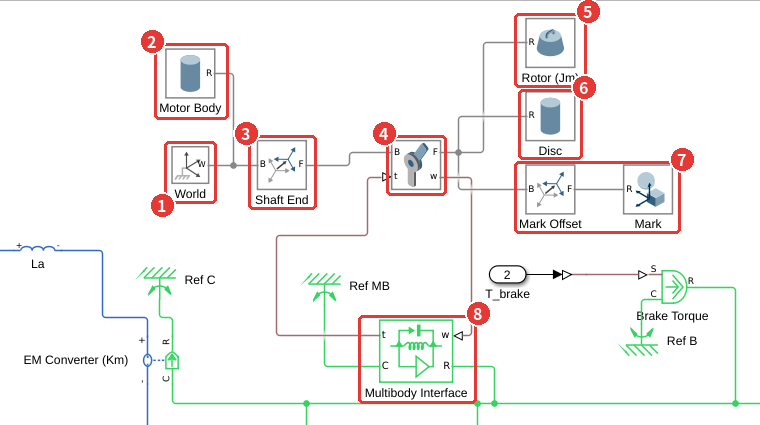
motor_speed_3d의 서브시스템에서 바뀐 부분. 회색 선은 Multibody의 프레임 연결이다.- 1World(World Frame) — 바닥. 모터 몸체와 축 끝이 여기에 붙는다.
- 2Motor Body(Cylindrical Solid) — 반지름 2 cm, 길이 5 cm의 짙은 회색 원통. 바닥에 붙어 움직이지 않으니 그림에만 쓰인다.
- 3Shaft End(Rigid Transform) — Translation을 Standard Axis +Z, 0.035 m로. 바닥 좌표계를 3.5 cm 위로 옮긴 자리가 축 끝이다.
- 4Revolute Joint — B(base)는 축 끝, F(follower)는 도는 쪽. F가 B에 대해 z축 둘레로 돈다. 설정은 아래 그림.
- 5Rotor (Jm)(Inertia) — Inertia Type을 Custom으로, Moments of Inertia에
[Jm Jm Jm]. 도는 축이 z이므로 세 번째 값만 결과에 쓰인다. 질량 칸(0.1 kg)은 축 위에 있어 회전에 영향이 없다. - 6Disc(Cylindrical Solid) — 원판. 반지름
r_disc, 두께 0.01 m, 질량m_disc. 설정은 아래 그림. - 7Mark Offset · Mark — 고른 원판은 돌아도 돈 것이 보이지 않는다. 원판 중심에서
[0.8*r_disc 0 0.006]m 옮긴 자리(가장자리 쪽, 윗면 바로 위)에 빨간 점을 찍었다. - 8Multibody Interface — 관절이 잰 각속도를 w로 받고, 축에 걸린 토크를 t로 관절에 넘긴다. R은 축(초록 선)에, C는 바닥(Ref MB)에 붙인다. 지운 Jm · JL이 붙어 있던 자리에 이 블록 하나가 대신 붙는 셈이다.
🆕 이 절에서 처음 나오는 것
- 프레임(frame) 연결 — 회색 선
- Multibody 블록끼리 잇는 선은 「이 두 블록의 좌표계가 같은 자리, 같은 방향에 붙어 있다」는 뜻이다. 10회의 초록 선이 「같은 속도로 움직이는 점」이었다면 회색 선은 「같은 좌표계」다. 그래서 관절의 F에 붙은 회전자 · 원판 · 빨간 점은 모두 한 덩어리로 같이 돈다.
- B(base) · F(follower)
- 관절과 Rigid Transform의 두 단자. F의 좌표계가 B의 좌표계에서 어떻게 놓이는지를 블록이 정한다. Rigid Transform은 늘 같은 거리만큼 옮기고, Revolute Joint는 각도만큼 돌린다.
- Multibody Explorer
- Multibody 모델을 Run하면 저절로 열리는 3D 창. 예전 버전에서는 Mechanics Explorer라고 불렀다. 시뮬레이션이 끝난 뒤에도 결과를 다시 재생할 수 있다.
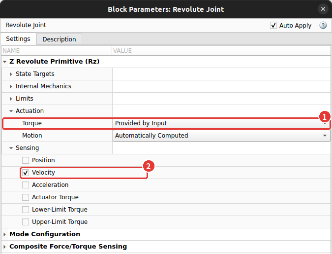
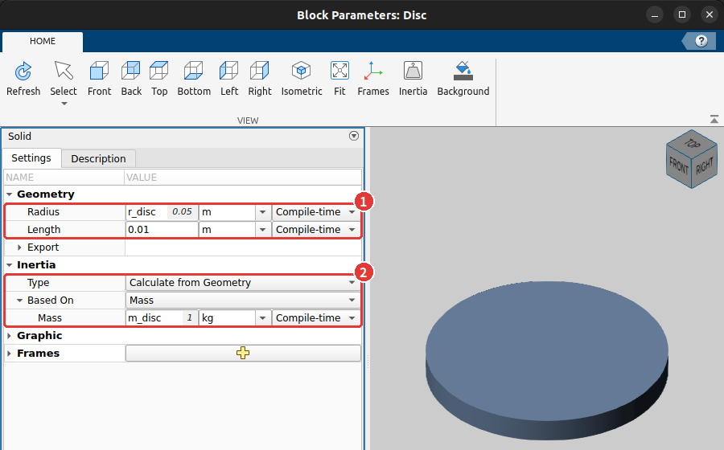
r_disc, 두께 0.01 m
2 Inertia › Type을 Calculate from Geometry, Based on을 Mass로 하고 질량 m_disc. 관성 칸이 따로 없다 — 모양과 질량에서 구한다.⑥과 같은 변수가 작업공간에 있으니 그대로 돌리면 된다. 결과는 ⑦에서 만든 rpm_ssc(⑥의 모델 결과)와 비교한다.
% 원판을 Multibody 로 바꾼 모델을 같은 변수로 돌리고 ⑥의 결과와 비교한다
out3 = sim('motor_speed_3d'); % Multibody Explorer 창이 함께 열린다
rpm3 = out3.logsout.getElement('rpm').Values;
rpm3_t = interp1(rpm3.Time, rpm3.Data, tt); % ⑦과 같은 시간축으로
fprintf('⑥의 모델과 가장 큰 차이 %.4f rpm\n', max(abs(rpm3_t - rpm_ssc)))명령 창 출력
⑥의 모델과 가장 큰 차이 0.0000 rpm📐 이론과 잇기 — Multibody가 구한 원판의 관성
두 모델의 차이가 0이다. 이번 모델 어디에도 JL을 적지 않았다. Disc 블록은 반지름과 질량만 받고, 원통의 관성 공식으로 관성을 스스로 계산했다.
그 값이 ①에서 손으로 구한 값과 같다는 뜻이다.
두께(0.01 m)는 이 축의 관성에 들어가지 않는다. 원판을 두껍게 그려도 질량이 같으면 같은 답이 나온다.
⚠️ 같은 축의 관성을 두 곳에 나누면 대수 루프 경고가 뜬다
원판만 Multibody로 바꾸고 Jm (rotor)는 Simscape의 Inertia 블록으로 남겨 두기 쉽다. 그러면 Run할 때 명령 창에
contains 1 algebraic loops라는 경고가 뜨고, 결과도 출발하는 순간에 3.6 rpm쯤 어긋난다.
축은 하나인데 관성이 Simscape 쪽과 Multibody 쪽에 나뉘어 있으면, 한쪽의 가속도를 구하는 데 다른 쪽의 가속도가 같은 순간에 필요해진다. Simulink는 이런 고리를 대수 루프(algebraic loop)라고 부른다. 축에 붙은 관성을 모두 한쪽에 모아 두면 이 경고가 사라진다. 그래서 5에서 회전자 관성도 Multibody의 Inertia 블록으로 옮겼다. 마찰(댐퍼)과 브레이크는 Simscape 쪽에 그대로 두어도 된다.
Run을 누르면 Multibody Explorer 창이 열리고 시뮬레이션이 진행되는 대로 원판이 돈다. 끝난 뒤에는 아래 재생 막대로 결과를 다시 볼 수 있다.

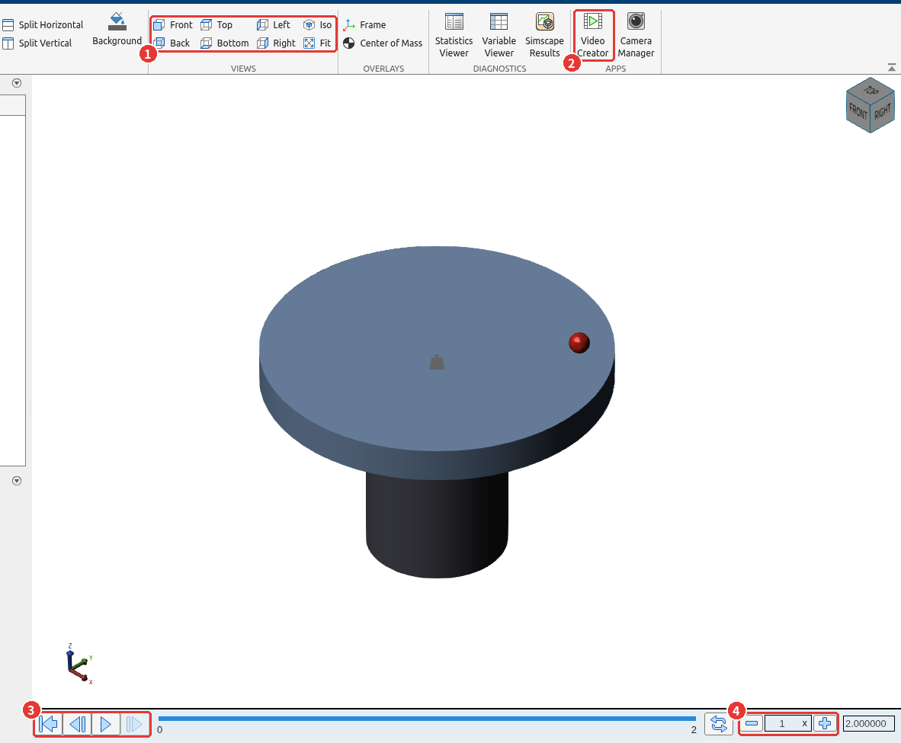
- 1VIEWS — 보는 방향. 처음에는 정면(Front)에서 보여 원판이 납작한 막대로 보인다. Iso(비스듬히 위에서)를 누르고 Fit으로 화면에 맞췄다. 마우스로 끌어 돌려 볼 수도 있다.
- 2Video Creator — 재생 화면을 영상 파일로 저장한다(조금 더 알아두면).
- 3재생 버튼 — 처음으로 · 뒤로 · 재생. 시뮬레이션 결과를 다시 돌려 본다.
- 4배속 — 1이면 실제 시간 그대로다. 400 rpm은 1초에 6.7바퀴라 눈으로 따라가기 어렵다. −를 눌러 0.1로 낮추면 10배 느리게 재생된다.
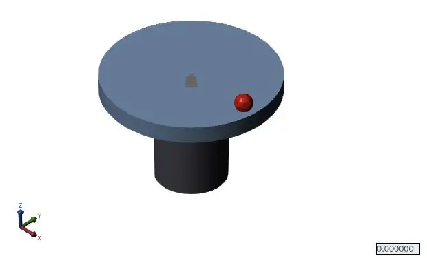
빨간 점이 한 바퀴 도는 데 걸리는 시간을 보면 rpm이 느껴진다 — 400 rpm을 10배 느리게 하면 1초에 0.67바퀴다. 1초에 브레이크가 걸려도 속도는 400에서 381 rpm으로 5%쯤 떨어질 뿐이라 눈으로는 거의 구별되지 않는다. 제어기가 그만큼 잘 버틴다는 뜻이기도 하다.
⑨ 원판 질량을 바꾸면 — 포화와 와인드업
원판을 다른 것으로 바꾸면 이 제어기를 다시 설계해야 할까? PI에는 적분 항이 있으니 결국 400 rpm에는 닿을 것 같다. 원판 질량을 0.5 · 1 · 2 · 4 kg으로 바꿔 가며 같은 제어기로 돌려 본다.
Simscape 모델의 JL (disc) 블록이 변수 JL을 읽으니 작업공간의 값만 바꾸면 된다.
% 원판 질량을 바꿔 가며 — 제어기는 1 kg 에 맞춰 설계한 그대로
figure; hold on
for m_disc = [0.5 1 2 4]
JL = 0.5*m_disc*r_disc^2; % Simscape 의 JL (disc) 블록이 읽는 값
o = sim('motor_speed');
r = o.logsout.getElement('rpm').Values; v = o.logsout.getElement('u').Values;
fprintf('%.1f kg : 최대 %.0f rpm, 전압이 12 V 에 붙어 있던 시간 %.2f s\n', ...
m_disc, max(r.Data), sum(diff(v.Time) .* (abs(v.Data(1:end-1)) >= V_max - 1e-6)))
plot(r.Time, r.Data, 'LineWidth', 1.8, 'DisplayName', sprintf('%.1f kg', m_disc))
end
hold off; grid on; legend('Location', 'southeast')
xlabel('시간 (s)'); ylabel('회전속도 (rpm)'); ylim([0 500])
title('원판 질량에 따른 응답 (같은 PI 제어기)')
m_disc = 1; JL = 0.5*m_disc*r_disc^2; % 원래 값으로 되돌린다명령 창 출력
0.5 kg : 최대 399 rpm, 전압이 12 V 에 붙어 있던 시간 0.00 s
1.0 kg : 최대 400 rpm, 전압이 12 V 에 붙어 있던 시간 0.00 s
2.0 kg : 최대 431 rpm, 전압이 12 V 에 붙어 있던 시간 0.00 s
4.0 kg : 최대 482 rpm, 전압이 12 V 에 붙어 있던 시간 0.29 s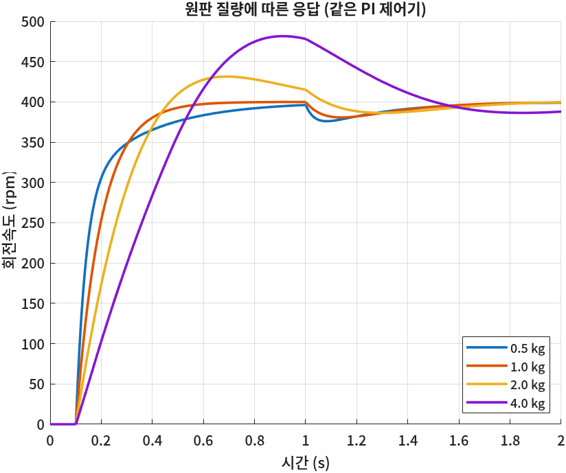
네 곡선이 왜 다른지 두 가지로 나눠 본다.
- 극점-영점 상쇄가 어긋난다 (0.5 · 2 kg). PI 영점은 1 kg일 때의 모터 극점 \(-a = -4.73\)에 맞춰 놓았다. 원판이 바뀌면 \(a = (DR_a + K^2)/(JR_a)\)가 바뀌어 영점과 극점이 더는 지워지지 않는다. 남은 극점-영점 쌍 때문에 0.5 kg은 끝에서 천천히 기어오르고, 2 kg은 넘쳤다가 내려온다. 폐루프가 더는 1차가 아니다.
- 전압 포화와 와인드업 (4 kg). 원판이 무거우면 가속하는 데 시간이 걸려 오차가 오래 크게 남는다. 제어기는 12 V보다 큰 전압을 요구하지만 Saturation이 12 V에서 자른다(출력의 「0.29 s」). 그동안에도 적분 항은 잘리기 전의 오차를 계속 쌓는다. 속도가 목표에 닿을 무렵에는 적분 값이 너무 커져 있어서 전압이 바로 내려오지 못하고, 482 rpm까지 넘친다. 이 현상을 적분기 와인드업(integrator windup)이라고 한다.
⚠️ 전달함수로 설계한 응답은 「선형인 동안」만 맞는다
④의 설계는 전압이 한계에 닿지 않는다는 전제 위에 있다. 원판이 무거워지거나 목표를 크게 바꾸면(예: 0 → 900 rpm) 전압이 12 V에 걸리고, 그때부터는 설계한 1차 응답이 나오지 않는다. Simscape · Simulink로 포화를 넣어 돌려 보는 이유가 이것이다. 와인드업을 줄이는 방법은 조금 더 알아두면에 있다.
🧪 실습
모터 모델을 직접 조립하고 목표 속도를 바꿔 본다
이걸 해 보면 무엇을 알게 되나: 식의 항 하나하나를 블록으로 옮기는 감각을 익히고, 설계한 제어기가 어디까지 통하는지(포화가 시작되는 지점)를 직접 찾는다.
준비물: MATLAB(Simulink · Simscape · Simscape Multibody · Control System Toolbox).
- 스크립트
motor_lab.m에 ②의 변수 조각과 ④의 설계 조각을 붙여 넣고 실행한다.Kp = 0.254,Ki = 1.202가 나오는지 본다. (5분) ssc_new로 새 모델을 열고 ⑤의 그림대로 블록을 놓고 잇는다. 블록의 값 칸에는 숫자 대신 변수 이름(RaLaKmJmJLDmDL)을 적는다. (20분)- Inport · Outport를 달고 Ctrl+G로 묶은 뒤, 바깥에 ⑥의 루프를 그린다. Model Settings에서 Stop Time 2, Max step size 1e-3. (10분)
V_max = 12; t_brake = 1; T_brake = 0.05;를 실행하고 Run. Scope가 ⑥의 그림과 같은지 본다. (3분)rpm_ref를 600, 800, 900으로 바꿔 돌린다. 전압이 12 V에 붙기 시작하는 목표값과, 그때 rpm 곡선이 어떻게 달라지는지 적는다. (7분)- ⑧처럼
motor_speed_3d로 저장하고 Jm · JL을 Multibody 블록으로 바꾼다.rpm_ref = 900으로 Run해서 Multibody Explorer에서 원판이 도는 모습을 본다. (15분)
이렇게 되면 성공이다: 4번의 Scope가 0.5초에 400 rpm, 1초 뒤 381 rpm까지 내려갔다 돌아오는 곡선이고, 5번에서 목표가 커질수록 처음 전압 \(K_p\omega_{ref}\)가 커지다가 어느 목표부터는 12 V에 평평하게 붙고 rpm이 목표를 넘쳤다 돌아온다.
📝 연습문제
- ④에서 폐루프 시정수를 \(\tau_c = 0.05\)초로 줄이면 \(K_p\), \(K_i\)는 얼마인가? 400 rpm 목표에서 첫 순간의 전압 \(K_p\,\omega_{ref}\)를 계산하고 12 V와 비교하라. Simscape 모델로 돌려 예상이 맞는지 확인하라.
- 원판의 마찰 \(D_L\)을 10배(\(10^{-2}\))로 키우면 400 rpm을 유지하는 데 드는 전압은 얼마인가? ④의 📐 식으로 계산하고 시뮬레이션으로 확인하라. 이 원판으로 낼 수 있는 최고 속도는 몇 rpm인가?
- ⑨에서 4 kg 원판을 쓸 때 PI를 그 원판에 맞춰 다시 설계하라(\(a\)와 \(b\)를 다시 계산). 와인드업이 사라지나? 사라지지 않는다면 그 이유를 처음 전압으로 설명하라.
✅ 점검
조금 더 알아두면
- 와인드업 막기 (anti-windup). PID Controller 블록의 Saturation 탭에서 Limit output을 켜고 위아래 한계를 ±12로 주면, 블록 안에서 출력을 자르면서 Anti-windup method(clamping 등)로 잘린 동안에는 적분을 멈춘다. 그러면 별도의 Saturation 블록이 필요 없고 ⑨의 넘침이 크게 줄어든다.
- 극점-영점 상쇄와 외란. ④의 설계는 목표 추종을 1차로 깔끔하게 만들지만, 지운 모터 극점 \(-a\)(시정수 0.21초)는 외란 응답에 그대로 남는다. ⑥에서 브레이크 뒤 400 rpm으로 돌아오는 데 0.5초 넘게 걸린 이유다. 외란을 더 빨리 이기려면 영점을 상쇄 위치에서 옮기고 근궤적(7회)으로 극점을 다시 고른다.
- Simscape Electrical의 DC Motor 블록. 오늘 조립한 부분(저항 · 인덕터 · 변환기 · 회전자 관성 · 마찰)을 한 블록에 담은 것이 있다(별도 제품). 데이터시트 값(정격 전압 · 무부하 속도 · 정지 토크)으로 파라미터를 넣을 수 있다.
- Multibody Explorer 화면을 영상으로. 창의 Video Creator 버튼, 또는 명령
smwritevideo('motor_speed_3d', 'disc', 'PlaybackSpeedRatio', 0.1)로 마지막 시뮬레이션 결과를 10배 느린 영상 파일로 저장한다. ⑧의 움직이는 그림도 이것으로 만들었다. 창에 보이는 방향 그대로 찍히니 먼저 시점을 맞춰 둔다. 명령은 다 찍기 전에 돌아오므로, Video Creator 창이 닫힌 뒤에 파일을 연다. - 센서와 이산 제어. 실제 모터 제어기는 엔코더로 각도를 재고, 마이크로컨트롤러가 1 ms마다 PI를 계산한다. PID Controller 블록의 Time domain을 Discrete-time으로 바꾸고 Sample time을 주면 그런 디지털 제어기를 흉내 낼 수 있다.